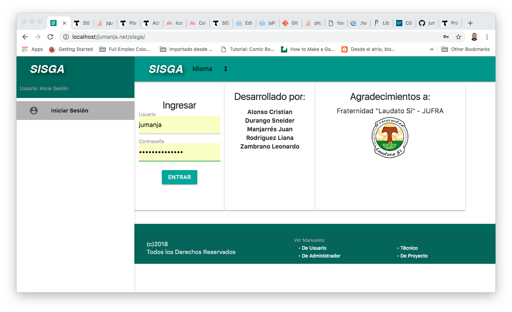

| FACULTAD DE INGENIERÍA, DISEÑO, E INNOVACIÓN | |
| PRÁCTICA APLICADA TDS | Institución Universitaria Politécnico Grancolombiano |
| FACULTAD DE INGENIERÍA, DISEÑO, E INNOVACIÓN | |
| PRÁCTICA APLICADA TDS | Institución Universitaria Politécnico Grancolombiano |
El presente documento recopila los aspectos técnicos a considerar para la implementación del Sistema para Gestión de Actas SISGA. Requerirá de instalar previamente un ambiente adecuado, El sistema operará en formato web, usando los lenguajes HTML, CSS, JavaScript y librerías adicionales para el frontend (capa visible para los usuarios). En su backend (capa invisible a los usuarios) se desarrollará utilizando PHP5+ mediante la creación de una API (Interfaz de programación de aplicaciones por sus siglas en inglés) que a su vez se conectará a una base de datos MySql 5.0+ . Cualquier sistema operativo y servidor web que soporte esta tecnología podrá ser utilizado, pero se sugiere servidor web Apache 2.0+ y sistema operativo Linux Ubuntu 12+.
Para el Código se recomienda montar un repositorio local con git y para clonar el repositorio remoto de SISGA. Si requiere información para instalar git, con éste enlace podrá obtenerla junto a las diversas formas en las que se puede descargarlo e instalarlo: https://git-scm.com/
Se recomienda descargar SISGA desde su repositorio github, ubicados en la carpeta pública del servidor web elegido, por ejemplo /var/www/html o c:\htdocs según su instalación. Ubicados ahí, con este comando podrá clonar el repositorio y quedará instalado en su disco duro:
git clone https://github.com/jumanja/SISGA.git
https://github.com/jumanja/SISGA/archive/master.zip
Y luego descomprimirlo en la carpeta pública de su servidor web.
Referente a éste documento, puede encontrar una versión en línea en el siguiente enlace:https://jumanja.net/SISGA/docs/manual_tecnico
SISGA se conecta a una base de datos MySql +5.6 (o una versión equivalente de MariaDB), y se conecta a un esquema de bae de datos llamado sisga. Viene configurado para conectarse a localhost, con un usuario y clave de administrador a la base de datos. Se incluyen aquí los parámetros de conexión por defecto, pero se recomienda al finalizar su instalación, cambiar dichos parámetros por usuarios y claves propios.
En la carpeta SISGA/sql encontrará un archivo llamado sql_connect.php en el que vienen los valores por defecto de la conexión para crear las tablas y crear el usuario administrador SISGA para poder ingresar por la interfaz del usuario.
$servidor= "localhost";
$usuario= "adminsisga";
$password = "uAdmin2018";
$nombreBD= "sisga";
En la carpeta SISGA/sql podrá encontrar el archivo sisga_Struc_AutoInc_1.sql que si desea puede ejecutar desde MySql o phpmyAdmin MySql workbench o cualquier otro manejador de BD compatible con MySql, este sql intentará borrar las tablas si existen. Un método menos destructivo es ejecutar en su navegador http://localhost/sql para que se ejecute desde php una a una las instrucciones para crear las tablas (si existe alguna, se detendrá la ejecución del script), y puede ejecutarlo cuantas veces quiera o necesite, ya que no borrará ninguna tabla. Si es una reinstalación, se recomienda que luego de crar el esquema sisga, No se cree ninguna tabla y se ejecute http://localhost/sql para crearlas.
Una vez existan las tablas, necesitará crear el usuario administrador de SISGA (Este No es el usuario anteriormente creado para conectarse a la base de datos, sino el usuario que podrá ingresar mendiante la interfaz gráfica para configurar su información dentro de SISGA, y por ejemplo, crear a los demás usuarios del aplicativo)
Para ello, ingrese a http://localhost/sql/crea_admin.php y se ejecutarán tres inserciones sql, es decir, se añadirá un registro en la tabla servicios, otro en la tabla fraternidades y finalmente, un registro en la tabla usuarios.
Luego de ejecutarse deberá quedar creado en la base de datos el usuario:
usuario: admin
clave: webmaster

Para acceder a la versión web de SISGA, se debe abrir en un navegador (se recomienda Google Chrome) http://sisga.jumanja.net o https://jumanja.net/SISGA que deberá mostrarles el aplicativo funcionando online. Àmbos enlaces permiten utilizar el aplicativo aaccediendo a la misma versión de código y de datos.
Nota:Para instrucciones referente al manejo del SISGA, por favor refiérase al Manual de Administrador del Sistema, y al Manual de Usuario del Sistema.
Para efectos de prueba del software, se provee con la instalación en la carpeta SISGA/sql los siguientes archivos exportados (sql dumps) con los que se pueden configurar el SISGA de la siguiente forma:
Este archivo sisga_Data_local.sql contiene una exportación de sólo datos (sin incluir la creación de las estructuras de las tablas) con datos de prueba pre-configurados, tres fraternidades distintas, y actas de ejemplo ingresadas en el sistema. Para instalarlo, haga su propio export (sql dump) de la base de datos SISGA a manera de copia de seguridad (o si no tiene aún información que guardar, elimine los registros - TRUNCATE TABLE - de las tablas que había creado previamente). Luego importe SISGA/sql/sisga_Data_local.sql y una vez hecho esto, utilice el usuario admin/webmaster para hacer login.
Este archivo sisga_Struc_local.sql contiene una exportación de sólo estructura (sin incluir los datos de las tablas) en caso de que quiera en algún momento crearlas o recrearlas. Para instalarlo, haga su propio export (sql dump) de la base de datos SISGA a manera de copia de seguridad, puesto que este sql dump eliminará las tablas (-DROP TABLE IF EXISTS-) antes de recrearlas. Luego importe SISGA/sql/sisga_Struc_local.sql y una vez hecho esto, quedarán las estructuras vacías, listas para importar datos. Recuerde que de esta forma NO tendrá ningún usuario administrador con el que pueda hacer login, así que se recomienda en este punto seguir las instrucciones del item "1.5 Crear el Usuario Administrador para SISGA" para crear el usuario admin/webmaster para hacer login.
Este archivo sisga_Todo_local_final.sql contiene una exportación tanto de estructura como de los datos. Para instalarlo, haga su propio export (sql dump) de la base de datos SISGA a manera de copia de seguridad (o si no tiene aún información que guardar, elimine las tablas - DROP TABLE -). Luego importe SISGA/sql/sisga_Data_local.sql y una vez hecho esto, utilice el usuario admin/webmaster para hacer login.
Los datos que contienen éstos sql dumps (a excepción del que solo trae las estructuras vacías, sisga_Struc_local.sql) instalarán datos de prueba, de demostración, con usuarios de diferentes perfiles pre-generados. Entre otros, contiene los siguientes usuario / clave:
Nota: La intención es permitir encontrar información en todas las tablas, lo mismo que actas ya creadas, para poder tener una idea más integral de las funcionalidades. Se sugiere utilizar los usuarios admin, presidenta, secretaria, y regional, para poder apreciar las diferentes opciones habilitadas según el servicio que prestan. Más información en los correspondientes manuales: Manual de Administrador del Sistema, y al Manual de Usuario del Sistema.
Este archivo sisga_Laudato_Si.sql contiene una exportación tanto de estructura como de los datos, pero esta vez solo tiene las tablas principales con información, y No tiene ningún acta creada. Se generó con el objetivo de reiniciar rápidamente el sistema con información pre-configurada pero sin movimientos de actas y correspondientes asistentes, comentarios, notificaciones, tareas, etc... Para instalarlo, haga su propio export (sql dump) de la base de datos SISGA a manera de copia de seguridad (o si no tiene aún información que guardar, elimine las tablas - DROP TABLE -). Luego importe SISGA/sql/sisga_Laudato_Si.sql y una vez hecho esto, utilice el usuario admin/webmaster para hacer login.
Para diferenciar éste último sql dump generado, (sisga_Laudato_Si.sql) se variaron los usuarios de diferentes perfiles pre-generados. Por lo que, contiene los siguientes usuario / clave:
Nota: La intención es permitir encontrar información en todas las tablas, pero SIN actas, para poder empezar desde la primera acta elegida. Se puede tomar éste sql dump como el archivo a utilizar preparado previamente para un entorno de produción. Sin embargo, se sugire no usar usuarios genéricos como el que tiene, es decir, en vez de secre crear un usuario con iniciales y apellido de la persona en vez de algo genérico, que es una práctica recomendada en seguridad de la información y auditoría. Más información en los correspondientes manuales: Manual de Administrador del Sistema, y al Manual de Usuario del Sistema.
De acuerdo al levantamiento de información realizado con los integrantes de la Junta Local, identificamos los siguientes casos de uso. Para mayor claridad, a continuación presentamos el diagrama Integrado de casos de uso detectados, luego la lista, y luego el detalle de cada caso:

| Referencia | Nombre del Caso de Uso |
|---|---|
| CAS-001 | Ingresar al Sistema |
| CAS-002 | Validar Usuario |
| CAS-003 | Iniciar Sesión |
| CAS-004 | Cerrar Sesión |
| CAS-005 | Gestión de Fraternidades |
| CAS-006 | Gestión de Lugares de Reunión |
| CAS-007 | Gestión de Servicios |
| CAS-008 | Gestión de Tipos de Actas |
| CAS-009 | Gestión de Usuarios |
| CAS-010 | Gestión de Etiquetas |
| CAS-011 | Elaborar Acta |
| CAS-012 | Guardar Progreso |
| CAS-013 | Guardar Preliminar |
| CAS-014 | Notificación vía Email |
| CAS-015 | Actas por Aprobar |
| CAS-016 | Aprobar Acta |
| CAS-017 | Generar Acta en PDF |
| CAS-018 | Actas por Revisar |
| CAS-019 | Revisar Acta |
| CAS-020 | Buscador de Actas |
| CAS-021 | Informe de Actas |
| CAS-001 | |
|---|---|
| Caso de Uso | CAS-001 Ingresar al Sistema |
| Actor(es) | Usuarios del Sistema |
| Descripción | Captura los datos que el usuario suministra al sistema, retorna los datos de una sesión si los datos son válidos |
| Tipo | Primario |
| Datos de Entrada | Usuario, Contraseña. |
| Datos de Salida | Un token de sesión, el tipo de servicio, el servicio, el id del usuario si los datos son válidos. Un mensaje de error negando el acceso si los datos no son válidos |
| Precondición | El actor (el usuario) debe estar registrado previamente en el sistema para poder recibir el acceso. |
| Secuencia Normal | El actor ingresa mediante un navegador web al aplicativo, y cuando aparece la interfaz gráfica digita el Usuario, Contraseña y hace click en el botón Entrar. Se llama al caso de uso CAS-002 Validar Usuario |
| Postcondición | Se crea una sesión de usuario. |
| Excepciones | El usuario no está registrado, la contraseña no coincide con el usuario, el usuario No está activo, no se obtuvieron los datos por que no hay conexión de red entre la API y la base de datos. |
| Prioridad | Alta |
| CAS-002 | |
|---|---|
| Caso de Uso | CAS-002 Validar Usuario |
| Actor(es) | Usuarios del Sistema |
| Descripción | Determina si los datos del usuario que está intentando ingresar, son válidos. |
| Tipo | Secundario |
| Datos de Entrada | Usuario, Contraseña |
| Datos de Salida | Un token de sesión, el tipo de servicio, el servicio, el id del usuario si los datos son válidos.
Un mensaje de error negando el acceso si los datos no son válidos. |
| Precondición | El actor (el usuario) debe estar registrado previamente en el sistema para poder recibir el acceso. |
| Secuencia Normal | Este caso de uso recibe del Caso CAS-001 Ingresar al Sistema, los datos de Usuario y Clave para realizar la validación encriptando la clave y comparándola con la clave del usuario que está intentando ingresar. Si el usuario existe, la clave corresponde, y el usuario está activo, llama al caso CAS-003 Iniciar Sesión para generar la sesión de usuario. |
| Postcondición | Se crea una sesión de usuario. |
| Excepciones | El usuario no está registrado, la contraseña no coincide con el usuario, el usuario No está activo, no se obtuvieron los datos por que no hay conexión de red entre la API y la base de datos. |
| Prioridad | Alta |
| CAS-003 | |
|---|---|
| Caso de Uso | CAS-003 Iniciar Sesión |
| Actor(es) | Usuarios del Sistema |
| Descripción | Genera un token encriptado y una fecha hora de expiración del token, guardándolo en la tabla de usuarios, en el registro del usuario al que le corresponde la sesión. |
| Tipo | Secundario |
| Datos de Entrada | Usuario, Contraseña |
| Datos de Salida | Un token de sesión, el tipo de servicio, el servicio, el id del usuario si los datos son válidos.
Un mensaje de error negando el acceso si los datos no son válidos. |
| Precondición | El actor (el usuario) debe estar registrado previamente en el sistema para poder recibir el acceso. |
| Secuencia Normal | Este caso de uso recibe del Caso CAS-001 Ingresar al Sistema, los datos de Usuario y Clave para realizar la validación encriptando la clave y comparándola con la clave del usuario que está intentando ingresar. Si el usuario existe, la clave corresponde, y el usuario está activo, llama al caso CAS-003 Iniciar Sesión para generar la sesión de usuario. |
| Postcondición | Se crea una sesión de usuario. |
| Excepciones | El usuario no está registrado, la contraseña no coincide con el usuario, el usuario No está activo, no se obtuvieron los datos por que no hay conexión de red entre la API y la base de datos. |
| Prioridad | Alta |
| CAS-004 | |
|---|---|
| Caso de Uso | CAS-004 Cerrar Sesión |
| Actor(es) | Usuarios del Sistema |
| Descripción | Remueve los datos de la sesión actualmente vigente en la tabla de usuarios. |
| Tipo | Secundario |
| Datos de Entrada | Usuario, Token |
| Datos de Salida | Número de registros actualizados.
Un mensaje de error si no se pudo realizar la operación |
| Precondición | El actor (el usuario) debe tener una sesión activa |
| Secuencia Normal | Este caso de uso recibe del Caso CAS-001 Ingresar al Sistema, los datos de Usuario y Clave para realizar la validación encriptando la clave y comparándola con la clave del usuario que está intentando ingresar. Si el usuario existe, la clave corresponde, y el usuario está activo, llama al caso CAS-003 Iniciar Sesión para generar la sesión de usuario. |
| Postcondición | Se cierra una sesión de usuario. |
| Excepciones | El usuario no tiene una sesión iniciada, no se obtuvieron los datos por que no hay conexión de red entre la API y la base de datos. |
| Prioridad | Alta |
| CAS-005 | |
|---|---|
| Caso de Uso | CAS-005 Gestión de Fraternidades |
| Actor(es) | Administrador del Sistema |
| Descripción | Permite Adicionar, Modificar, Cambiar de Estado los registros de la tabla de Fraternidades |
| Tipo | Primario |
| Datos de Entrada | Elección de acción a realizar ya sea agregar registro, elegir registro para modificar su información o solo su estado. También la información a actualizar en la base de datos |
| Datos de Salida | Número de registros actualizados.
Un mensaje de error si no se pudo realizar la operación |
| Precondición | El actor (el usuario) debe tener una sesión activa y ser usuario Administador |
| Secuencia Normal | Este caso de uso primario recibe la identificación del registro a actualizar, y sus datos. Si el registro es nuevo, lo adiciona. No hay borrado físico, solo borrado lógico en la base de datos si se cambia el estado de Activo a Retirado. También hay un estado Inactivo si no se quiere borrar lógicamente el registro sino que se quiere desactivarlo temporalmente. |
| Postcondición | Se actualiza la información de la tabla en la base de datos. |
| Excepciones | El usuario no tiene una sesión iniciada, o la sesión expiró, o no se obtuvieron los datos por que no hay conexión de red entre la API y la base de datos. |
| Prioridad | Alta |
| CAS-006 | |
|---|---|
| Caso de Uso | CAS-006 Gestión de Lugares de Reunión |
| Actor(es) | Administrador del Sistema |
| Descripción | Permite Adicionar, Modificar, Cambiar de Estado los registros de la tabla de Lugares de Reunión. |
| Tipo | Primario |
| Datos de Entrada | Elección de acción a realizar ya sea agregar registro, elegir registro para modificar su información o solo su estado. También la información a actualizar en la base de datos. |
| Datos de Salida | Número de registros actualizados. Un mensaje de error si no se pudo realizar la operación. |
| Precondición | El actor (el usuario) debe tener una sesión activa y ser usuario Administador. |
| Secuencia Normal | Este caso de uso primario recibe la identificación del registro a actualizar, y sus datos. Si el registro es nuevo, lo adiciona. No hay borrado físico, solo borrado lógico en la base de datos si se cambia el estado de Activo a Retirado. También hay un estado Inactivo si no se quiere borrar lógicamente el registro sino que se quiere desactivarlo temporalmente. |
| Postcondición | Se actualiza la información de la tabla en la base de datos. |
| Excepciones | El usuario no tiene una sesión iniciada, o la sesión expiró, o no se obtuvieron los datos por que no hay conexión de red entre la API y la base de datos. |
| Prioridad | Alta |
| CAS-007 | |
|---|---|
| Caso de Uso | CAS-007 Gestión de Servicios |
| Actor(es) | Administrador del Sistema |
| Descripción | Permite Adicionar, Modificar, Cambiar de Estado los registros de la tabla de Servicios. |
| Tipo | Primario |
| Datos de Entrada | Elección de acción a realizar ya sea agregar registro, elegir registro para modificar su información o solo su estado. También la información a actualizar en la base de datos. |
| Datos de Salida | Número de registros actualizados.
Un mensaje de error si no se pudo realizar la operación. |
| Precondición | El actor (el usuario) debe tener una sesión activa y ser usuario Administador. |
| Secuencia Normal | Este caso de uso primario recibe la identificación del registro a actualizar, y sus datos. Si el registro es nuevo, lo adiciona. No hay borrado físico, solo borrado lógico en la base de datos si se cambia el estado de Activo a Retirado. También hay un estado Inactivo si no se quiere borrar lógicamente el registro sino que se quiere desactivarlo temporalmente. |
| Postcondición | Se actualiza la información de la tabla en la base de datos. |
| Excepciones | El usuario no tiene una sesión iniciada, o la sesión expiró, o no se obtuvieron los datos por que no hay conexión de red entre la API y la base de datos. |
| Prioridad | Alta |
| CAS-008 | |
|---|---|
| Caso de Uso | CAS-008 Gestión de Tipos de acta |
| Actor(es) | Administrador del Sistema |
| Descripción | Permite Adicionar, Modificar, Cambiar de Estado los registros de la tabla de Tipos de Acta. |
| Tipo | Primario |
| Datos de Entrada | Elección de acción a realizar ya sea agregar registro, elegir registro para modificar su información o solo su estado. También la información a actualizar en la base de datos. |
| Datos de Salida | Número de registros actualizados.
Un mensaje de error si no se pudo realizar la operación. |
| Precondición | El actor (el usuario) debe tener una sesión activa y ser usuario Administador. |
| Secuencia Normal | Este caso de uso primario recibe la identificación del registro a actualizar, y sus datos. Si el registro es nuevo, lo adiciona. No hay borrado físico, solo borrado lógico en la base de datos si se cambia el estado de Activo a Retirado. También hay un estado Inactivo si no se quiere borrar lógicamente el registro sino que se quiere desactivarlo temporalmente. |
| Postcondición | Se actualiza la información de la tabla en la base de datos. |
| Excepciones | El usuario no tiene una sesión iniciada, o la sesión expiró, o no se obtuvieron los datos por que no hay conexión de red entre la API y la base de datos. |
| Prioridad | Alta |
| CAS-009 | |
|---|---|
| Caso de Uso | CAS-009 Gestión de Usuarios |
| Actor(es) | Administrador del Sistema |
| Descripción | Permite Adicionar, Modificar, Cambiar de Estado los registros de la tabla de Usuarios. |
| Tipo | Primario |
| Datos de Entrada | Elección de acción a realizar ya sea agregar registro, elegir registro para modificar su información o solo su estado. También la información a actualizar en la base de datos. |
| Datos de Salida | Número de registros actualizados.
Un mensaje de error si no se pudo realizar la operación. |
| Precondición | El actor (el usuario) debe tener una sesión activa y ser usuario Administador. |
| Secuencia Normal | Este caso de uso primario recibe la identificación del registro a actualizar, y sus datos. Si el registro es nuevo, lo adiciona. No hay borrado físico, solo borrado lógico en la base de datos si se cambia el estado de Activo a Retirado. También hay un estado Inactivo si no se quiere borrar lógicamente el registro sino que se quiere desactivarlo temporalmente. |
| Postcondición | Se actualiza la información de la tabla en la base de datos. |
| Excepciones | El usuario no tiene una sesión iniciada, o la sesión expiró, o no se obtuvieron los datos por que no hay conexión de red entre la API y la base de datos. |
| Prioridad | Alta |

| CAS-010 | |
|---|---|
| Caso de Uso | CAS-010 Gestión de Etiquetas |
| Actor(es) | Miembro de Junta Local, que preste el servicio en Secretaría. |
| Descripción | Permite Adicionar, Modificar, Cambiar de Estado en la tabla de Etiquetas. |
| Tipo | Primario |
| Datos de Entrada | Elección de acción a realizar ya sea agregar registro, elegir registro para modificar su información o solo su estado. |
| Datos de Salida | Número de registros actualizados. Un mensaje de error si no se pudo realizar la operación |
| Precondición | El actor (el usuario) debe tener una sesión activa y ser usuario Administador. |
| Secuencia Normal | Este caso de uso primario recibe la identificación del registro a actualizar, y sus datos. Si el registro es nuevo, lo adiciona. No hay borrado físico, solo borrado lógico en la base de datos si se cambia el estado de Activo a Retirado. También hay un estado Inactivo si no se quiere borrar lógicamente el registro sino que se quiere desactivarlo temporalmente. |
| Postcondición | Se actualiza la información de la tabla en la base de datos. |
| Excepciones | El usuario no tiene una sesión iniciada, o la sesión expiró, o no se obtuvieron los datos por que no hay conexión de red entre la API y la base de datos. |
| Prioridad | Alta |
| CAS-011 | |
|---|---|
| Caso de Uso | CAS-011 Elaborar Actas |
| Actor(es) | Miembro de Junta Local. |
| Descripción | Permite Adicionar, Modificar, y genera un Cambio de Estado de registros en la tabla de Actas. |
| Tipo | Primario |
| Datos de Entrada | Elección de acción a realizar ya sea agregar registro, elegir registro para modificar su información o solo su estado. |
| Datos de Salida | Número de registros actualizados.
Un mensaje de error si no se pudo realizar la operación. |
| Precondición | El actor (el usuario) debe tener una sesión activa y ser usuario Miembro de Junta Local. |
| Secuencia Normal | Este caso de uso primario recibe la identificación del registro a actualizar, y sus datos. Si el registro es nuevo, lo adiciona. No hay borrado físico, solo borrado lógico en la base de datos si se cambia el estado de Activo a Retirado. También hay un estado Inactivo si no se quiere borrar lógicamente el registro sino que se quiere desactivarlo temporalmente. Sin embargo, aplican restricciones según las reglas de Negocio descritas en el documento ERS-Especificación de Requerimientos, En Secretaría pueden Crear y modificar Actas, pero no pueden agregar comentarios. Los otros Miembros de Junta Local pueden Hacer comentarios pero no pueden ni crear ni Modificar. Este caso llama al caso CAS-012 Guardar Progreso, y al Caso CAS-013 Guardar Preliminar dependiendo sea la elección del usuario. |
| Postcondición | Se actualiza la información de la tabla en la base de datos. |
| Excepciones | El usuario no tiene una sesión iniciada, o la sesión expiró, o no se obtuvieron los datos por que no hay conexión de red entre la API y la base de datos. |
| Prioridad | Alta |
| CAS-012 | |
|---|---|
| Caso de Uso | CAS-012 Guardar Progreso |
| Actor(es) | Miembro de Junta Local, con Servicio en Secretaría. |
| Descripción | Permite Actualizar en la Base de Datos la información que tiene actualmente el Acta. |
| Tipo | Secundario |
| Datos de Entrada | Datos a actualizar del Acta. |
| Datos de Salida | Número de registros actualizados.
Un mensaje de error si no se pudo realizar la operación. |
| Precondición | El actor (el usuario) debe tener una sesión activa y ser usuario Miembro de Junta Local, con Servicio en Secretaría |
| Secuencia Normal | Este caso de uso secundario recibe la identificación del registro a actualizar, y sus datos. |
| Postcondición | Se actualiza la información de la tabla en la base de datos. |
| Excepciones | El usuario no tiene una sesión iniciada, o la sesión expiró, o no se obtuvieron los datos por que no hay conexión de red entre la API y la base de datos. |
| Prioridad | Alta |
| CAS-013 | |
|---|---|
| Caso de Uso | CAS-013 Guardar Preliminar |
| Actor(es) | Miembro de Junta Local, con Servicio en Secretaría. |
| Descripción | Permite Actualizar en la Base de Datos la información que tiene actualmente el Acta. |
| Tipo | Secundario |
| Datos de Entrada | Datos a actualizar del Acta. |
| Datos de Salida | Número de registros actualizados.
Un mensaje de error si no se pudo realizar la operación. |
| Precondición | El actor (el usuario) debe tener una sesión activa y ser usuario Miembro de Junta Local, con Servicio en Secretaría |
| Secuencia Normal | Este caso de uso secundario recibe la identificación del registro a actualizar, y sus datos. Se aplican restricciones según las reglas de Negocio descritas en el documento ERS-Especificación de Requerimientos, En Secretaría pueden Crear y modificar Actas, pero no pueden agregar comentarios. Los otros Miembros de Junta Local pueden Hacer comentarios pero no pueden ni crear ni Modificar. Este caso llama al caso CAS-014 Notificación vía email pues produce un cambio de estado, dejando el acta en estado Preliminar, y disponible para que los demás miembros la puedan revisar/ aprobar. |
| Postcondición | Se actualiza la información de la tabla en la base de datos. |
| Excepciones | El usuario no tiene una sesión iniciada, o la sesión expiró, o no se obtuvieron los datos por que no hay conexión de red entre la API y la base de datos. |
| Prioridad | Alta |
| CAS-014 | |
|---|---|
| Caso de Uso | CAS-014 Notificación Vía Email |
| Actor(es) | Miembro de Junta Local, con Servicio en Secretaría. |
| Descripción | Permite enviar un correo electrónico a los miembros asistentes de la reunión que tuvo lugar el acta. |
| Tipo | Secundario |
| Datos de Entrada | Identificación del Acta. |
| Datos de Salida | Número de registros actualizados.
Un mensaje de error si no se pudo realizar la operación. |
| Precondición | El actor (el usuario) debe tener una sesión activa y ser usuario Miembro de Junta Local, con Servicio en Secretaría. |
| Secuencia Normal | Este caso de uso secundario recibe la identificación del registro a actualizar, y sus datos. Se aplican restricciones según las reglas de Negocio descritas en el documento ERS-Especificación de Requerimientos, En Secretaría pueden Crear y modificar Actas, pero no pueden agregar comentarios. Los otros Miembros de Junta Local pueden Hacer comentarios pero no pueden ni crear ni Modificar. Este caso llama al caso CAS-014 Notificación vía email pues produce un cambio de estado, dejando el acta en estado Preliminar, y disponible para que los demás miembros la puedan revisar/ aprobar. |
| Postcondición | Se genera un correo electrónico y se intenta enviar por el servidor de correo configurado. |
| Excepciones | El usuario no tiene una sesión iniciada, o la sesión expiró, o no se obtuvieron los datos por que no hay conexión de red entre la API y la base de datos. |
| Prioridad | Baja |
| CAS-015 | |
|---|---|
| Caso de Uso | CAS-015 Actas por Aprobar |
| Actor(es) | Miembro de Junta Local |
| Descripción | Permite obtener una lista en pantalla de las actas que el usuario actual tiene por aprobar. |
| Tipo | Primario |
| Datos de Entrada | Identificación del Usuario que tiene actualmente la sesión. |
| Datos de Salida | Lista de las actas por aprobar.
Un mensaje de error si no se pudo realizar la operación. |
| Precondición | El actor (el usuario) debe tener una sesión activa y ser usuario Miembro de El actor (el usuario) debe tener una sesión activa y ser usuario Miembro de Junta Local. |
| Secuencia Normal | Este caso de uso secundario recibe la identificación del usuario que actualmente tiene la sesión, y consulta en la base de datos las actas que ese usuario tiene por aprobar. Este caso llama al caso CAS-016 Aprobar Acta si el usuario decide aprobar, o al caso CAS-019 Revisar Acta si solo quiere revisar el acta. |
| Postcondición | Se muestra en pantalla la lista de actas que el usuario tiene por aprobar. |
| Excepciones | El usuario no tiene una sesión iniciada, o la sesión expiró, o no se obtuvieron los datos por que no hay actas por aprobar para el usuario que tiene la sesión, o no hay conexión de red entre la API y la base de datos. |
| Prioridad | Media |
| CAS-016 | |
|---|---|
| Caso de Uso | CAS-016 Actas por Aprobar |
| Actor(es) | Miembro de Junta Local, con el servicio de Secretaría. |
| Descripción | Permite dar la aprobación del usuario que tiene la sesión activa, a el acta seleccionada. |
| Tipo | Secundario |
| Datos de Entrada | Identificación del Usuario que tiene actualmente la sesión e identificación del Acta Seleccionada. |
| Datos de Salida | Número de registros actualizados.
Un mensaje de error si no se pudo realizar la operación |
| Precondición | El actor (el usuario) debe tener una sesión activa y ser usuario Miembro de Junta Local, servicio de Secretaría. El acta seleccionada no debe tener aprobación por parte de ese usuario. |
| Secuencia Normal | Este caso de uso secundario recibe la identificación del usuario que actualmente tiene la sesión y la identificación de un acta seleccionada, y con esos datos retorna los datos del acta seleccionada en formato PDF para que se pueda descargar o visualizar en dicho formato. |
| Postcondición | Se muestra en pantalla o se permite descargar, el Acta en formato PDF. |
| Excepciones | El usuario no tiene una sesión iniciada, o la sesión expiró, o no se obtuvieron los datos por que el acta seleccionada no está aprobada o no hay conexión de red entre la API y la base de datos. |
| Prioridad | Media |
| CAS-017 | |
|---|---|
| Caso de Uso | CAS-017 Generar Acta en PDF |
| Actor(es) | Miembro de Junta Local, Regional, Nacional o Invitado. |
| Descripción | Permite obtener un versión del acta seleccionada en formato PDF. |
| Tipo | Secundario |
| Datos de Entrada | Identificación del Usuario que tiene actualmente la sesión e identificación del Acta Seleccionada. |
| Datos de Salida | Datos del acta seleccionada en formato PDF.
Un mensaje de error si no se pudo realizar la operación. |
| Precondición | El actor (el usuario) debe tener una sesión activa y ser usuario Miembro de Junta Local. El acta seleccionada debe estar en estado Aprobada. |
| Secuencia Normal | Este caso de uso secundario recibe la identificación del usuario que actualmente tiene la sesión y la identificación de un acta seleccionada, y con esos datos retorna los datos del acta seleccionada en formato PDF para que se pueda descargar o visualizar en dicho formato. |
| Postcondición | Se muestra en pantalla o se permite descargar, el Acta en formato PDF. |
| Excepciones | El usuario no tiene una sesión iniciada, o la sesión expiró, o no se obtuvieron los datos por que el acta seleccionada no está aprobada o no hay conexión de red entre la API y la base de datos. |
| Prioridad | Media |
| CAS-018 | |
|---|---|
| Caso de Uso | CAS-018 Actas por Revisar |
| Actor(es) | Miembro de Junta Local, Regional, Nacional o Invitado. |
| Descripción | Permite obtener una lista en pantalla de las actas que el usuario actual tiene por revisar. |
| Tipo | Secundario |
| Datos de Entrada | Identificación del Usuario que tiene actualmente la sesión. |
| Datos de Salida | Lista de las actas por revisar.
Un mensaje de error si no se pudo realizar la operación. |
| Precondición | El actor (el usuario) debe tener una sesión activa y ser usuario Miembro de Junta Local, Regional, Nacional o Invitado. |
| Secuencia Normal | Este caso de uso Primario recibe la identificación del usuario que actualmente tiene la sesión, y consulta en la base de datos las actas que ese usuario tiene por revisar. Este caso llama al caso CAS-019 Revisar Acta si el usuario decide elegir un acta para revisar. |
| Postcondición | Se muestra en pantalla la lista de actas que el usuario tiene por revisar. |
| Excepciones | El usuario no tiene una sesión iniciada, o la sesión expiró, o no se obtuvieron los datos por que no hay actas por revisar para el usuario que tiene la sesión, o no hay conexión de red entre la API y la base de datos. |
| Prioridad | Media |
| CAS-019 | |
|---|---|
| Caso de Uso | CAS-019 Revisar Acta |
| Actor(es) | Miembro de Junta Local, con el servicio de Secretaría. |
| Descripción | Permite dar la aprobación del usuario que tiene la sesión activa, a el acta seleccionada. |
| Tipo | Secundario |
| Datos de Entrada | Identificación del Usuario que tiene actualmente la sesión e identificación del Acta Seleccionada. |
| Datos de Salida | Número de registros actualizados.
Un mensaje de error si no se pudo realizar la operación |
| Precondición | El actor (el usuario) debe tener una sesión activa y ser usuario Miembro de Junta Local, servicio de Secretaría. El acta seleccionada no debe tener aprobación por parte de ese usuario. |
| Secuencia Normal | Este caso de uso secundario recibe la identificación del usuario que actualmente tiene la sesión y la identificación de un acta seleccionada, y con esos datos retorna los datos del acta seleccionada en formato PDF para que se pueda descargar o visualizar en dicho formato. |
| Postcondición | Se muestra en pantalla o se permite descargar, el Acta en formato PDF. |
| Excepciones | El usuario no tiene una sesión iniciada, o la sesión expiró, o no se obtuvieron los datos por que el acta seleccionada no está aprobada o no hay conexión de red entre la API y la base de datos. |
| Prioridad | Media |
| CAS-020 | |
|---|---|
| Caso de Uso | CAS-020 Buscador de Actas |
| Actor(es) | Miembro de Junta Local. |
| Descripción | Permite realizar una búsqueda de las actas de la base de datos. |
| Tipo | Primario |
| Datos de Entrada | Identificación del Usuario que tiene actualmente la sesión y parámetros de búsqueda del acta como números, estados, fechas, lugares y palabras clave. |
| Datos de Salida | Lista de Actas encontradas. Un mensaje de error si no se pudo realizar la operación. |
| Precondición | El actor (el usuario) debe tener una sesión activa y ser usuario Miembro de Junta Local. |
| Secuencia Normal | Este caso de uso recibe la identificación del usuario que actualmente tiene la sesión y los parámetros de búsqueda, y con esos datos retorna la lista de actas que conciden. Si el usuario decide proceder a revisar algún acta, este caso llama al caso de uso CAS-019 Revisar Acta. |
| Postcondición | Se muestra en pantalla La lista de actas coincidentes con los parámetros de búsqueda. |
| Excepciones | El usuario no tiene una sesión iniciada, o la sesión expiró, o no se obtuvieron los datos por que no se encontraron coincidencias o no hay conexión de red entre la API y la base de datos. |
| Prioridad | Media |
| CAS-021 | |
|---|---|
| Caso de Uso | CAS-021 Informe de Actas |
| Actor(es) | Miembros de la Junta Regional o Nacional e Invitados. |
| Descripción | Permite generar el Informe de Actas. |
| Tipo | Primario |
| Datos de Entrada | Parámetros del Informe como Tipos de Acta, Rango de fechas, Estado. |
| Datos de Salida | Informe en pantalla con los datos de las actas según los parámetros dados. Un mensaje de error si no se pudo realizar la operación. |
| Precondición | El actor (el usuario) debe tener una sesión activa y ser usuario Miembro de la junta Regional o Nacional o Invitado. |
| Secuencia Normal | Este caso de uso primario recibe los parámetros del informe como tipos, fechas y estado y al enviar el formulario el sistema retorna los datos en pantalla de las actas encontradas según esos parámetros. |
| Postcondición | Se muestra el Informe en pantalla. |
| Excepciones | El usuario no tiene una sesión iniciada, o la sesión expiró, o no se obtuvieron los datos por que no hay conexión de red entre la API y la base de datos. |
| Prioridad | Baja |


A continuación los diagramas de la arquitectura de la solución de software SISGA, junto con la correspondiente explicación sobre las decisiones técnicas tomadas.

Según los requerimientos identificados para este proyecto, se tomaron las siguientes decisiones de arquitectura y diseño de la solución:


Relacionamos a continuacón las Estructuras de las tablas.
CREATE DATABASE IF NOT EXISTS `sisga` /*!40100 DEFAULT CHARACTER SET utf8 */;
USE `sisga`;
-- MySQL dump 10.13 Distrib 5.7.17, for macos10.12 (x86_64)
--
-- Host: localhost Database: sisga
-- ------------------------------------------------------
-- Server version 5.1.69
/*!40101 SET @OLD_CHARACTER_SET_CLIENT=@@CHARACTER_SET_CLIENT */;
/*!40101 SET @OLD_CHARACTER_SET_RESULTS=@@CHARACTER_SET_RESULTS */;
/*!40101 SET @OLD_COLLATION_CONNECTION=@@COLLATION_CONNECTION */;
/*!40101 SET NAMES utf8 */;
/*!40103 SET @OLD_TIME_ZONE=@@TIME_ZONE */;
/*!40103 SET TIME_ZONE='+00:00' */;
/*!40014 SET @OLD_UNIQUE_CHECKS=@@UNIQUE_CHECKS, UNIQUE_CHECKS=0 */;
/*!40014 SET @OLD_FOREIGN_KEY_CHECKS=@@FOREIGN_KEY_CHECKS, FOREIGN_KEY_CHECKS=0 */;
/*!40101 SET @OLD_SQL_MODE=@@SQL_MODE, SQL_MODE='NO_AUTO_VALUE_ON_ZERO' */;
/*!40111 SET @OLD_SQL_NOTES=@@SQL_NOTES, SQL_NOTES=0 */;
--
-- Table structure for table `actas`
--
DROP TABLE IF EXISTS `actas`;
/*!40101 SET @saved_cs_client = @@character_set_client */;
/*!40101 SET character_set_client = utf8 */;
CREATE TABLE `actas` (
`frat` varchar(15) NOT NULL,
`id` int(11) NOT NULL AUTO_INCREMENT,
`estado` char(1) NOT NULL,
`fecha` datetime DEFAULT NULL,
`tipoacta` varchar(10) NOT NULL,
`tema` text NOT NULL,
`lugar` varchar(30) NOT NULL,
`objetivos` text NOT NULL,
`responsable` varchar(25) NOT NULL,
`conclusiones` text NOT NULL,
`fechasig` datetime DEFAULT NULL,
`lugarsig` varchar(30) NOT NULL,
`desarrollo` text NOT NULL,
`creacion` datetime NOT NULL,
`progreso` datetime NOT NULL,
`preliminar` datetime NOT NULL,
`retiro` datetime NOT NULL,
`aprobacion` datetime NOT NULL,
PRIMARY KEY (`id`),
KEY `fx_lug_idx` (`lugar`),
KEY `fx_tipacta_idx` (`tipoacta`),
KEY `fx_lug2_idx` (`lugarsig`)
) ENGINE=MyISAM AUTO_INCREMENT=26 DEFAULT CHARSET=utf8;
/*!40101 SET character_set_client = @saved_cs_client */;
--
-- Table structure for table `asistentes`
--
DROP TABLE IF EXISTS `asistentes`;
/*!40101 SET @saved_cs_client = @@character_set_client */;
/*!40101 SET character_set_client = utf8 */;
CREATE TABLE `asistentes` (
`idacta` int(11) NOT NULL,
`id` int(11) NOT NULL AUTO_INCREMENT,
`asistente` varchar(25) NOT NULL,
`estado` char(1) NOT NULL,
`servicio` varchar(10) NOT NULL,
`tiposerv` varchar(15) NOT NULL,
`fecha` datetime NOT NULL,
PRIMARY KEY (`id`),
UNIQUE KEY `asistente_UNIQUE` (`idacta`,`asistente`),
KEY `fx_serv_idx` (`servicio`),
KEY `fx_asis_idx` (`asistente`)
) ENGINE=MyISAM AUTO_INCREMENT=470 DEFAULT CHARSET=utf8;
/*!40101 SET character_set_client = @saved_cs_client */;
--
-- Table structure for table `comentarios`
--
DROP TABLE IF EXISTS `comentarios`;
/*!40101 SET @saved_cs_client = @@character_set_client */;
/*!40101 SET character_set_client = utf8 */;
CREATE TABLE `comentarios` (
`idacta` int(11) NOT NULL,
`id` int(11) NOT NULL AUTO_INCREMENT,
`asistente` varchar(25) NOT NULL,
`estado` char(1) NOT NULL,
`text` text NOT NULL,
`fechahora` datetime NOT NULL,
PRIMARY KEY (`id`),
UNIQUE KEY `asistente_UNIQUE` (`idacta`,`asistente`,`fechahora`)
) ENGINE=MyISAM AUTO_INCREMENT=16 DEFAULT CHARSET=utf8;
/*!40101 SET character_set_client = @saved_cs_client */;
--
-- Table structure for table `etiquetas`
--
DROP TABLE IF EXISTS `etiquetas`;
/*!40101 SET @saved_cs_client = @@character_set_client */;
/*!40101 SET character_set_client = utf8 */;
CREATE TABLE `etiquetas` (
`frat` varchar(15) NOT NULL,
`etiqueta` varchar(45) NOT NULL,
`id` int(11) NOT NULL AUTO_INCREMENT,
`estado` char(1) NOT NULL,
PRIMARY KEY (`id`),
UNIQUE KEY `etiq_UNIQUE` (`etiqueta`),
KEY `fx_frat_idx` (`frat`)
) ENGINE=MyISAM AUTO_INCREMENT=6 DEFAULT CHARSET=utf8;
/*!40101 SET character_set_client = @saved_cs_client */;
--
-- Table structure for table `etiquetasacta`
--
DROP TABLE IF EXISTS `etiquetasacta`;
/*!40101 SET @saved_cs_client = @@character_set_client */;
/*!40101 SET character_set_client = utf8 */;
CREATE TABLE `etiquetasacta` (
`idacta` int(11) NOT NULL,
`etiqueta` varchar(45) NOT NULL,
`id` int(11) NOT NULL AUTO_INCREMENT,
`estado` char(1) NOT NULL,
PRIMARY KEY (`id`),
UNIQUE KEY `etiqacta_UNIQUE` (`idacta`,`etiqueta`),
KEY `fx_etiq_idx` (`etiqueta`)
) ENGINE=MyISAM AUTO_INCREMENT=197 DEFAULT CHARSET=utf8;
/*!40101 SET character_set_client = @saved_cs_client */;
--
-- Table structure for table `fraternidades`
--
DROP TABLE IF EXISTS `fraternidades`;
/*!40101 SET @saved_cs_client = @@character_set_client */;
/*!40101 SET character_set_client = utf8 */;
CREATE TABLE `fraternidades` (
`frat` varchar(15) NOT NULL,
`id` int(11) NOT NULL AUTO_INCREMENT,
`nombre` text NOT NULL,
`estado` char(1) NOT NULL,
`logo` varchar(45) NOT NULL,
`direccion` varchar(45) NOT NULL,
`ciudad` varchar(45) NOT NULL,
`email` varchar(45) NOT NULL,
PRIMARY KEY (`id`),
UNIQUE KEY `fraterni_UNIQUE` (`frat`)
) ENGINE=MyISAM AUTO_INCREMENT=4 DEFAULT CHARSET=utf8;
/*!40101 SET character_set_client = @saved_cs_client */;
--
-- Table structure for table `lugares`
--
DROP TABLE IF EXISTS `lugares`;
/*!40101 SET @saved_cs_client = @@character_set_client */;
/*!40101 SET character_set_client = utf8 */;
CREATE TABLE `lugares` (
`frat` varchar(15) NOT NULL,
`lugar` varchar(45) NOT NULL,
`id` int(11) NOT NULL AUTO_INCREMENT,
`estado` char(1) NOT NULL,
PRIMARY KEY (`id`),
UNIQUE KEY `lugares_UNIQUE` (`lugar`),
KEY `fk_frats_idx` (`frat`)
) ENGINE=MyISAM AUTO_INCREMENT=8 DEFAULT CHARSET=utf8;
/*!40101 SET character_set_client = @saved_cs_client */;
--
-- Table structure for table `notificaciones`
--
DROP TABLE IF EXISTS `notificaciones`;
/*!40101 SET @saved_cs_client = @@character_set_client */;
/*!40101 SET character_set_client = utf8 */;
CREATE TABLE `notificaciones` (
`idacta` int(11) NOT NULL,
`id` int(11) NOT NULL AUTO_INCREMENT,
`estado` char(1) NOT NULL,
`estadoacta` char(1) NOT NULL,
`origen` varchar(15) NOT NULL,
`destino` varchar(15) NOT NULL,
`fechahora` datetime NOT NULL,
PRIMARY KEY (`id`),
UNIQUE KEY `lugares_UNIQUE` (`idacta`,`fechahora`,`destino`),
KEY `fx_origen_idx` (`origen`),
KEY `fx_destino_idx` (`destino`)
) ENGINE=MyISAM AUTO_INCREMENT=59 DEFAULT CHARSET=utf8;
/*!40101 SET character_set_client = @saved_cs_client */;
--
-- Table structure for table `servicios`
--
DROP TABLE IF EXISTS `servicios`;
/*!40101 SET @saved_cs_client = @@character_set_client */;
/*!40101 SET character_set_client = utf8 */;
CREATE TABLE `servicios` (
`servicio` varchar(10) NOT NULL,
`tiposerv` varchar(15) NOT NULL,
`id` int(11) NOT NULL AUTO_INCREMENT,
`nombre` text NOT NULL,
`estado` char(1) NOT NULL,
PRIMARY KEY (`id`),
UNIQUE KEY `servicios_UNIQUE` (`servicio`)
) ENGINE=MyISAM AUTO_INCREMENT=10 DEFAULT CHARSET=utf8;
/*!40101 SET character_set_client = @saved_cs_client */;
--
-- Table structure for table `tareas`
--
DROP TABLE IF EXISTS `tareas`;
/*!40101 SET @saved_cs_client = @@character_set_client */;
/*!40101 SET character_set_client = utf8 */;
CREATE TABLE `tareas` (
`idacta` int(11) NOT NULL,
`id` int(11) NOT NULL AUTO_INCREMENT,
`estado` char(1) NOT NULL,
`text` text NOT NULL,
`usuario` varchar(25) NOT NULL,
`creada` datetime NOT NULL,
`inicioplan` date NOT NULL,
`finalplan` date NOT NULL,
PRIMARY KEY (`id`),
KEY `fx_usuari_idx` (`usuario`)
) ENGINE=MyISAM AUTO_INCREMENT=53 DEFAULT CHARSET=utf8;
/*!40101 SET character_set_client = @saved_cs_client */;
--
-- Table structure for table `tipoactas`
--
DROP TABLE IF EXISTS `tipoactas`;
/*!40101 SET @saved_cs_client = @@character_set_client */;
/*!40101 SET character_set_client = utf8 */;
CREATE TABLE `tipoactas` (
`frat` varchar(15) NOT NULL,
`tipo` varchar(11) NOT NULL,
`nombre` varchar(45) NOT NULL,
`id` int(11) NOT NULL AUTO_INCREMENT,
`estado` char(1) NOT NULL,
PRIMARY KEY (`id`),
UNIQUE KEY `tipoactas_UNIQUE` (`tipo`),
KEY `fk_frat_idx` (`frat`)
) ENGINE=MyISAM AUTO_INCREMENT=6 DEFAULT CHARSET=utf8;
/*!40101 SET character_set_client = @saved_cs_client */;
--
-- Table structure for table `usuarios`
--
DROP TABLE IF EXISTS `usuarios`;
/*!40101 SET @saved_cs_client = @@character_set_client */;
/*!40101 SET character_set_client = utf8 */;
CREATE TABLE `usuarios` (
`frat` varchar(15) NOT NULL,
`id` int(11) NOT NULL AUTO_INCREMENT,
`usuario` varchar(25) NOT NULL,
`apellidos` text NOT NULL,
`nombres` text NOT NULL,
`password` text NOT NULL,
`email` varchar(100) NOT NULL,
`servicio` varchar(10) NOT NULL,
`token` varchar(100) NOT NULL,
`tokenexpira` datetime NOT NULL,
`estado` char(1) NOT NULL,
PRIMARY KEY (`id`),
UNIQUE KEY `usuario_UNIQUE` (`usuario`),
KEY `fk_frats` (`frat`),
KEY `fk_serv_idx` (`servicio`)
) ENGINE=MyISAM AUTO_INCREMENT=16 DEFAULT CHARSET=utf8;
/*!40101 SET character_set_client = @saved_cs_client */;
/*!40103 SET TIME_ZONE=@OLD_TIME_ZONE */;
/*!40101 SET SQL_MODE=@OLD_SQL_MODE */;
/*!40014 SET FOREIGN_KEY_CHECKS=@OLD_FOREIGN_KEY_CHECKS */;
/*!40014 SET UNIQUE_CHECKS=@OLD_UNIQUE_CHECKS */;
/*!40101 SET CHARACTER_SET_CLIENT=@OLD_CHARACTER_SET_CLIENT */;
/*!40101 SET CHARACTER_SET_RESULTS=@OLD_CHARACTER_SET_RESULTS */;
/*!40101 SET COLLATION_CONNECTION=@OLD_COLLATION_CONNECTION */;
/*!40111 SET SQL_NOTES=@OLD_SQL_NOTES */;
-- Dump completed on 2018-11-17 16:05:15